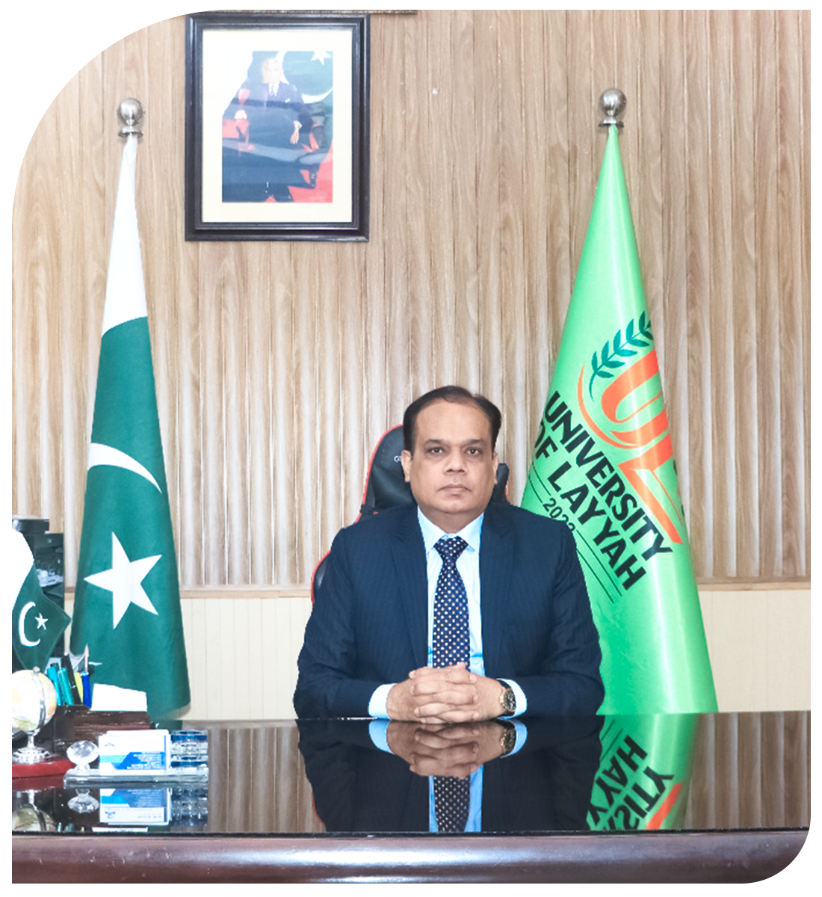

University of Layyah - A Growing Hub
Vice Chancellor's Message
It is indeed an honor for me to be the Vice Chancellor
of the University of Layyah (UL), Layyah. It was my passion
to lead an institute of higher learning engaged in
enlightening the youth to have a well-lived life along
with opportunities for entrepreneurship and employment.
I will try to contribute all my efforts to make this
University the best one by enabling students and faculty
through modern teaching methods, practical education and
collaborative research across the spectrum of challenges
and opportunities prevailing over the globe.
I welcome you to learn, explore and grow with the latest,
updated and sustainability-oriented knowledge and skills
to meet the competitive challenges of this modern era.
I wish you a successful and promising educational journey
with UL, open to all genders and students of all areas!
Prof. Dr. Muhammad Zubair Abu Bakar
Vice Chancellor